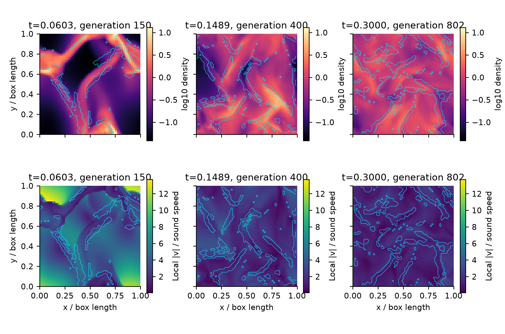
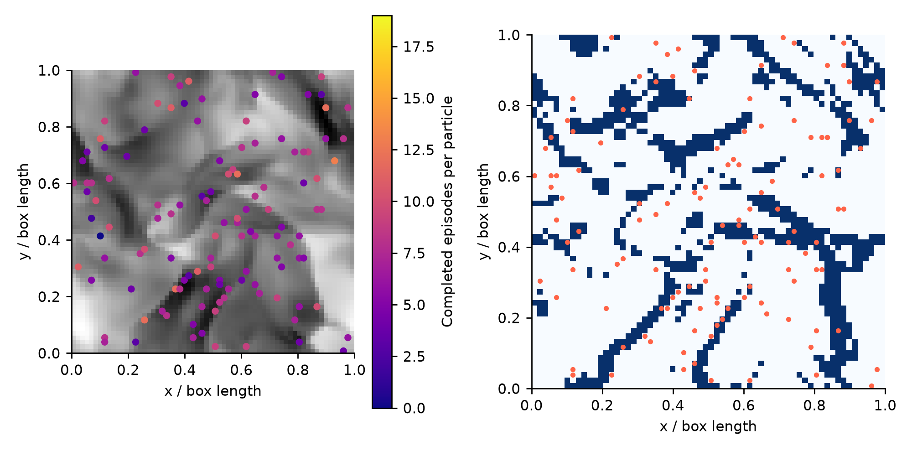
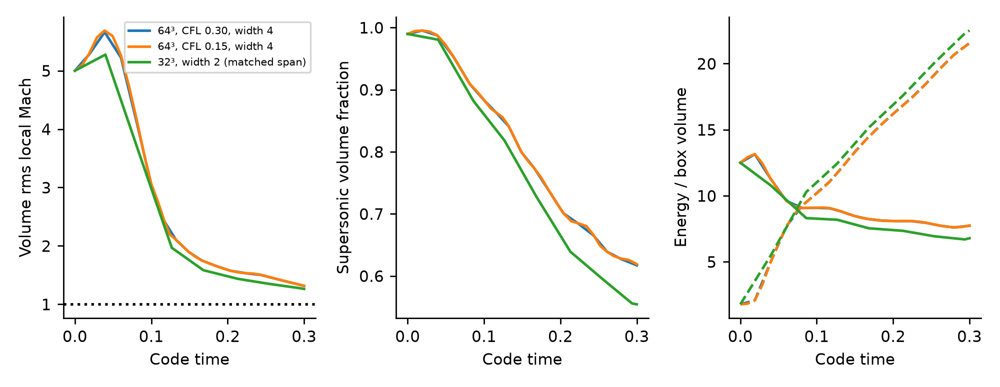
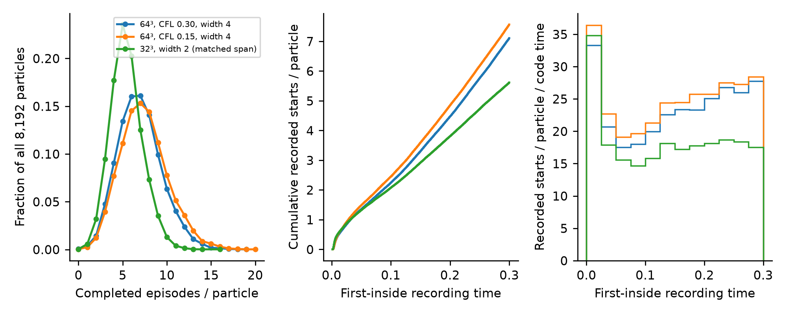
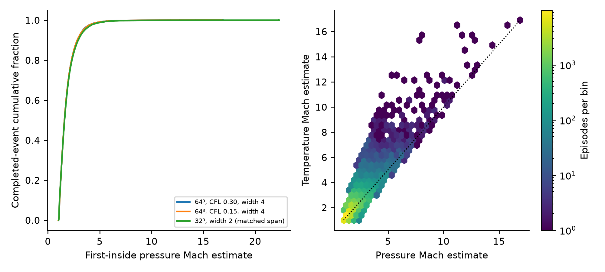
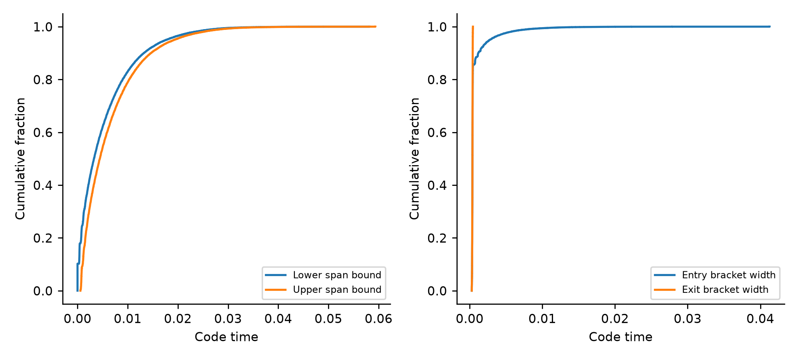
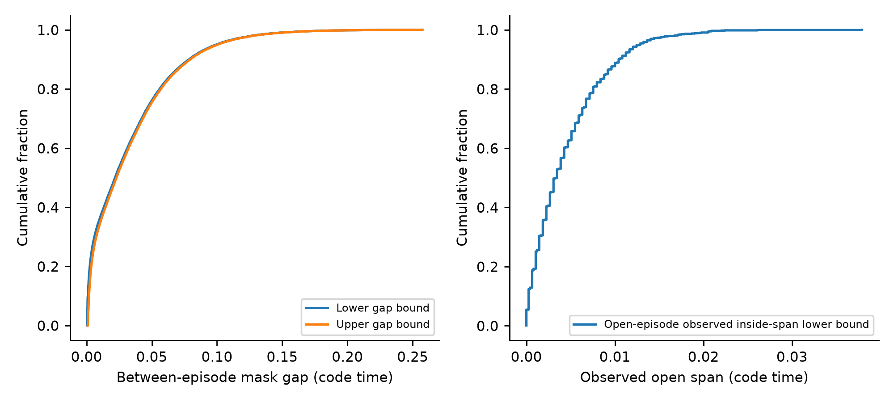
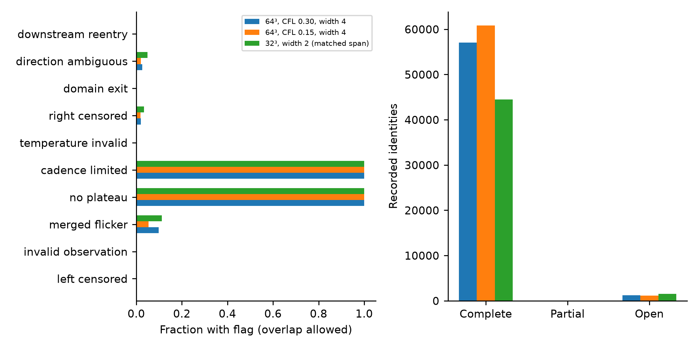
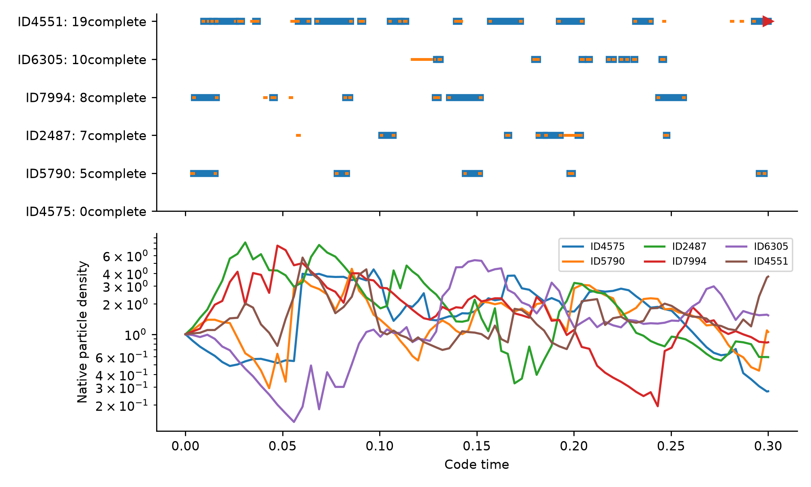
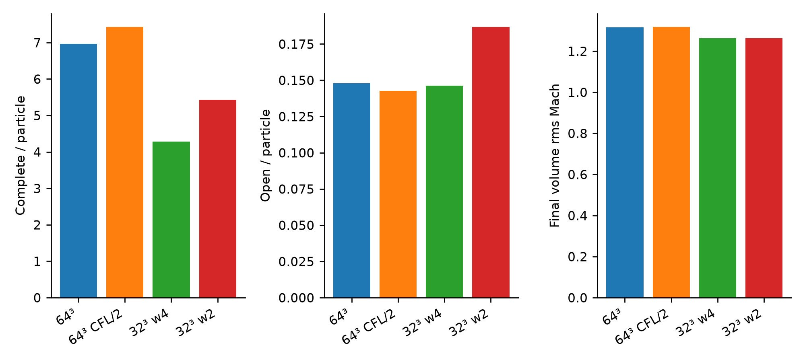

Forced supersonic turbulence: particle shock encounters
64³ periodic cells,8,192 MC particles, initial Mach 5, edot50, t=.3. Evolving adiabatic flow; scientific calibration pending.
Forced supersonic flow and shock regions

Actual z=0.5078125 slices of the 64³ baseline. Colors show log10 density (top) and local speed/sound speed (bottom); each row uses shared color limits. Cyan outlines are the unreduced native detector region recomputed from the exact saved primitive state, with true periodic neighbors, width 4 and min_mach=1.1. The three generations are the available saved states nearest t=.05,.15,.30. Local flow Mach is distinct from detector shock-Mach estimates. Masks demonstrate implemented numerical membership, not a certified physical shock catalogue.
VectorPDF · SVG
Particle histories over the final flow

Only the 123 actual particles whose final parent lies in the plotted z-cell are shown, avoiding a projection of unrelated depths. Left: final density and per-particle accumulated completed-episode count. Right: recomputed native region and the same particles. Counts include their whole recorded history and are not instantaneous shock membership. All 8,192 particle IDs survive; cell-center MC samples are not smooth material trajectories.
VectorPDF · SVG
Supersonic evolution and heating

Volume rms local Mach is sqrt(mean(|v|²/(gamma P/rho))); supersonic volume fraction counts cells with local Mach>1. Energy panel: solid kinetic, dashed gas internal energy, using the same case colors. Continuous edot=50 forcing is present, but adiabatic shock/source heating increases sound speed. All saved baseline rms Mach values exceed 1; this is an evolving forced realization, not a stationary turbulence ensemble. Total energy includes actual forcing work and the independently measured inherited RK2 source bias; edot is an input normalization target, not a validated physical injection rate.
VectorPDF · SVG
How often particles meet detected regions

The count distribution includes all 8,192 particles, including zero-encounter particles. Cumulative/rate panels count each canonical committed or terminal-open identity once at its first-inside observation; left-censored records, if present, are listed separately in the flags table. Rate bins have width 0.025 code time. These are sampled numerical episode recording rates, not exact physical shock-crossing rates; correlated particles and merged flicker prevent a naive independent-event error model. The coarse matched-span case uses width 2 at 32³.
VectorPDF · SVG
Recorded strength evidence

Left: finite first-inside pressure-Mach estimates for completed episodes, normalized per case. Right: baseline pressure/temperature estimators for 57013jointly finite events; 0events without both finite estimators remain in counts/CSV and validity flags. The diagonal is estimator agreement, not an independent physical truth test. Fixed endpoints at±width along the dominant normal axis have no certified plateaus. Either estimator can accept membership; a pressure estimate below 1.1 is therefore possible even with min_mach=1.1.
VectorPDF · SVG
Episode spans retain their timing brackets

For uncensored completed episodes, entry lies in[pre,first]and exit in[last,post]. The allowed elapsed-span bounds are[last-first,post-pre]; both endpoint CDFs are shown without inventing midpoints or exact crossing times. Right: widths of the underlying entry/exit observation brackets. Merged flicker can span brief outside intervals, so elapsed span is not continuous residence time. Cadence limitation and stochastic cell hopping remain explicit; these curves are not physical timing-error distributions.
VectorPDF · SVG
Recurrence and right censoring

Left: 48825pairs of consecutive uncensored completed sequences for the same particle. Gap bounds are[max(0,next.pre-previous.post),max(0,next.first-previous.last)]. A zero lower bound means overlapping evidence brackets, not a known zero waiting time. Right: 1212terminal-open identities retained separately, with observed inside-span lower bounds; no finite completed duration is assigned. No stationary waiting-time law, survival fit or independent-episode assumption is claimed.
VectorPDF · SVG
Validity flags and censored outcomes

Every event flag is shown, including universal no_plateau/cadence_limited; overlapping flags do not form a probability partition. Direction ambiguity, temperature invalidity and merged flicker remain evidence, not filtered failures. The zero downstream_reentry event-flag bar does not imply zero suppression: the separate surviving-state counter records 75,455 suppressed-entry attempts in the baseline (84,032 at half CFL). These counters are not extra encounter identities. Open terminal views retain canonical identity and can resume after restart; they are not counted as a second completed event. Complete means the numerical tracker obtained its closure evidence, not human certification of a physical passage.
VectorPDF · SVG
Individual particle records without invented trajectories

Particles are selected deterministically at count ranks 0, 25, 50, 75, 90 and 100 percent of the full population, breaking ties by ID; their IDs/counts are printed. Blue segments are first-to-last inside evidence; orange marks entry/exit timing brackets. Red triangles identify open terminal episodes. The lower panel shows actual sampled native density histories; connecting samples is a visual guide, not a continuous material path. Count selection is illustrative rather than an unbiased ensemble sample.
VectorPDF · SVG
Timestep, grid and detector-support sensitivity

64³ CFL/2 changes fluid integration, MC draws and observation cadence together.32³ width 4 also doubles the detector physical half-span;32³ width 2 matches the 64³ width 4 half-span(1/16 of box length). The two 32³ runs have byte-identical native particle histories and exact saved fluid/forcing arrays, isolating their detector-width difference. Grid comparisons still mix fluid resolution, stochastic transport and detection. These are measured sensitivities, not convergence acceptance or independent uncertainty estimates. No tolerances were tuned to reduce differences.
VectorPDF · SVG